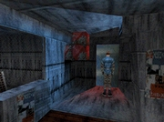

|
.
| Mysteres
de Perfect Dark : Chicago / Punk Pond |
| Ce
Mystère est relié aux Fromages. C'est un Bar à
Strip-Tease, comme le prouve la Barre sur la Table
et les nombreuses Chaises disposées tout autour. Dedans, on ne
trouve que le Fromage et un Falcon
2 Scope. Comment entrer ? Il suffit d'ouvrir la Porte à
coté de la Limousine (pas besoin que la Limousine soit là,
on peut y aller en n'importe quel difficulté) et de descendre
l'Escalier. En bas, des Guardes vous attendront alors faites Gaffe ! |


